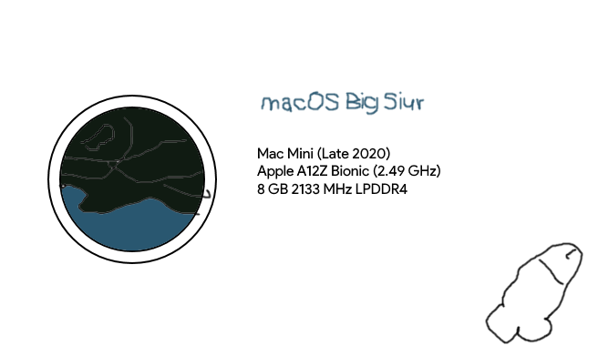

Your browser is somehow really old and can't do this YOU DON'T EVEN NEED A FUCKING UP TO DATE BROWSER TO PLAY MP3S
macOS big siur
 hey guysh I has tghe new macosom big siur by appel is very guud opernaknting sistem
it is sooper fest o n the totlay not reclymled Aple A12Z Bionik procesadory
it is totlay not ugly as fuck I lov luuk of iPadOS